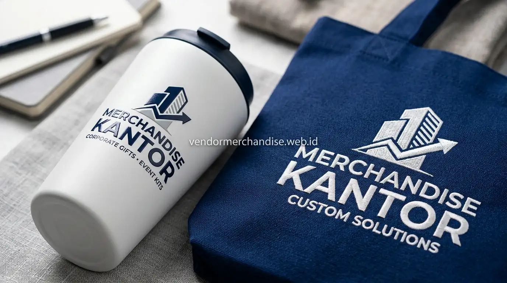

Apa yang Dimaksud dengan Seminar Kit Custom?
Seminar kit custom adalah paket merchandise seminar yang tidak menggunakan susunan produk baku, melainkan disusun ulang berdasarkan kebutuhan spesifik penyelenggara, baik dari sisi jenis item, jumlah kombinasi produk, maupun desain visual yang diterapkan pada setiap item.
Berbeda dengan paket standar yang sudah memiliki susunan tetap, seminar kit custom memberi keleluasaan bagi perusahaan atau instansi untuk menambah, mengurangi, atau mengganti item sesuai kebutuhan acara yang sedang direncanakan.
Bagaimana Proses Kustomisasi Seminar Kit Sesuai Kebutuhan Acara?
Proses kustomisasi seminar kit di Merchandise Kantor dimulai dari diskusi kebutuhan acara, termasuk jumlah peserta, tema seminar, dan anggaran yang tersedia, sebelum tim menyusun rekomendasi kombinasi produk yang paling sesuai.

Tahapan yang umum dilalui dalam proses kustomisasi:
- Diskusikan kebutuhan acara, termasuk tema dan target peserta
- Tentukan kombinasi item yang ingin dimasukkan ke dalam seminar kit
- Pilih bahan dan teknik cetak sesuai anggaran yang tersedia
- Lakukan approval desain sebelum masuk tahap produksi
- Proses produksi dan quality control sebelum pengemasan akhir
Apa Saja Pilihan Bahan dan Teknik Cetak untuk Seminar Kit Custom?
Pilihan bahan dan teknik cetak untuk seminar kit custom dapat disesuaikan dengan target kesan yang ingin dibangun penyelenggara, mulai dari kesan sederhana dan fungsional hingga kesan premium untuk acara berskala besar.
Beberapa opsi yang umum tersedia:
- Bahan stainless atau plastik untuk tumbler, tergantung anggaran
- Bahan kanvas atau spunbond untuk tote bag dalam paket
- Teknik sablon untuk desain sederhana dengan biaya lebih efisien
- Teknik UV printing atau bordir untuk hasil cetak yang lebih detail dan premium
Untuk Siapa Seminar Kit Custom Paling Cocok Digunakan?
Seminar kit custom paling cocok digunakan oleh perusahaan atau instansi yang memiliki kebutuhan spesifik terhadap komposisi merchandise, misalnya karena tema acara tertentu, keterbatasan anggaran, atau keinginan menonjolkan identitas visual acara secara lebih personal dibanding paket standar.
Instansi pemerintah maupun lembaga pendidikan juga sering memilih seminar kit custom karena kebutuhan format dan jumlah item yang harus disesuaikan dengan ketentuan internal masing-masing lembaga.
Seminar kit custom dapat dikombinasikan dengan kebutuhan merchandise seminar kit untuk perusahaan dan instansi lainnya agar seluruh rangkaian kebutuhan merchandise acara tetap konsisten dari sisi desain dan kualitas produk.
"Fleksibilitas seminar kit custom memberikan kebebasan bagi tim event untuk merancang kenang-kenangan yang paling pas dengan karakter brand."
— Erlang Sinatrya, Penulis Merchandise Kantor

Pesan Seminar Kit Custom Sekarang di Merchandise Kantor
Merchandise Kantor siap membantu perusahaan dan instansi menyusun seminar kit custom logo sesuai kebutuhan acara, mulai dari pemilihan item hingga penyesuaian bahan dan teknik cetak. Hubungi tim Merchandise Kantor sekarang untuk konsultasi kustomisasi dan estimasi harga sesuai kebutuhan seminar kit Anda.